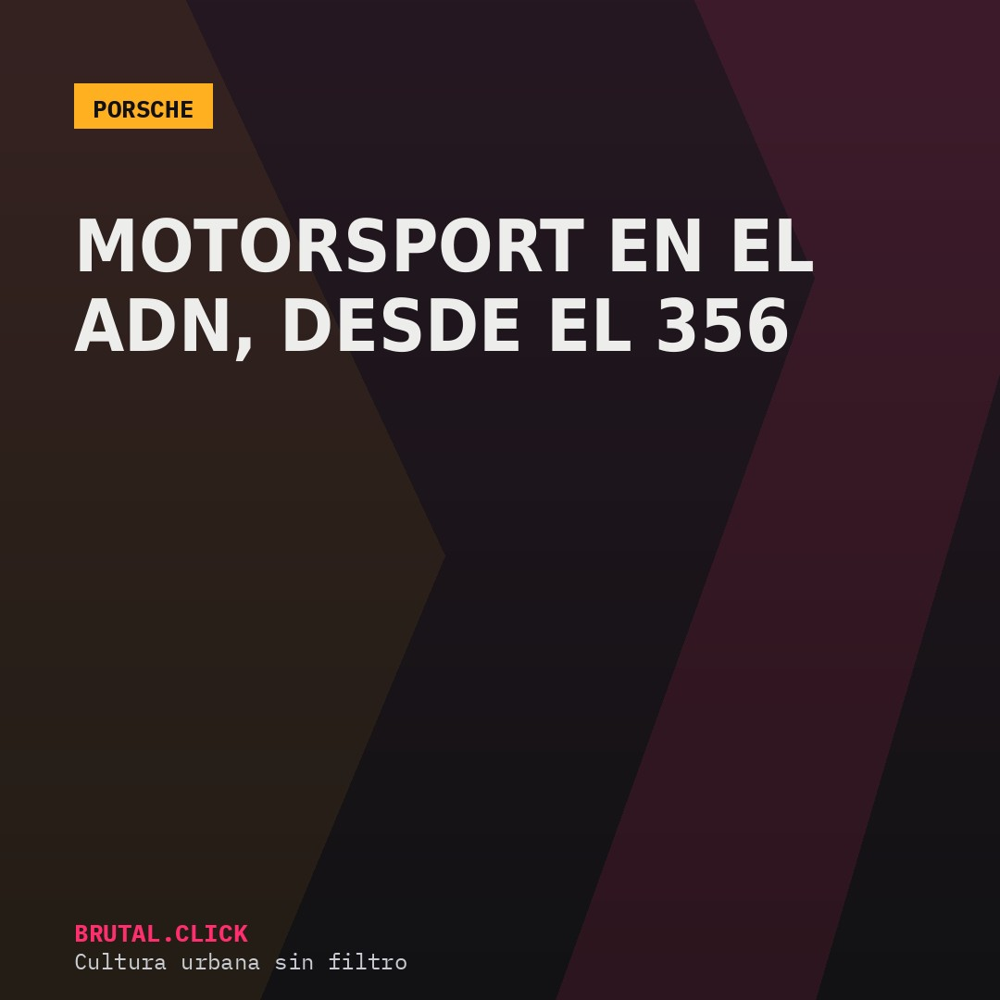
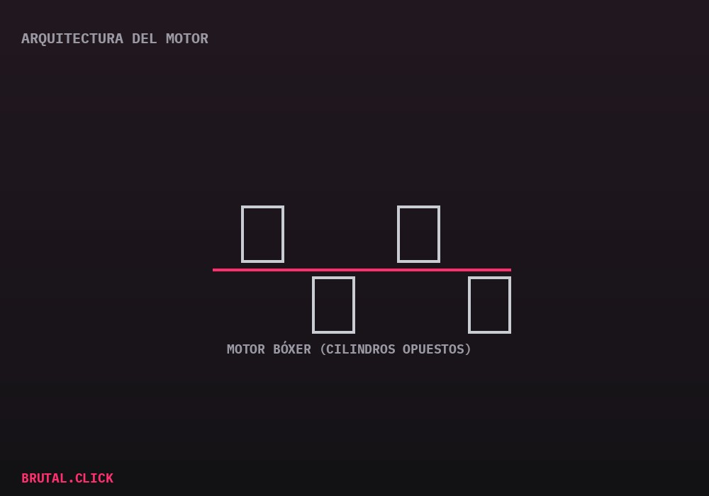

Este artículo incluye enlaces de afiliación a productos relacionados (modelos a escala, pósters técnicos). No hay comisión posible por la venta de vehículos nuevos. Si compras a través de estos enlaces, podemos recibir una pequeña comisión sin coste extra para ti.

Pocas marcas del automóvil pueden decir, con honestidad, que su coche de calle y su coche de competición comparten la misma filosofía de fondo. Porsche es una de ellas — y lo ha sido desde el primer 356, cuando la compañía todavía era una operación pequeña frente a los grandes fabricantes europeos.
Una arquitectura que no ha cambiado de fondo
El elemento técnico que mejor explica esta continuidad es el motor bóxer —cilindros opuestos horizontalmente, en vez de en línea o en V—, presente en el 911 desde su nacimiento en 1963. En sus orígenes, refrigerado por aire; hoy, por agua, pero conservando la misma lógica de diseño: centro de gravedad bajo y reparto de peso que favorece el comportamiento en curva.

Esa arquitectura, poco habitual fuera de Porsche y Subaru, es la razón técnica por la que el 911 se ha mantenido reconocible generación tras generación, incluso mientras el resto de la industria migraba hacia configuraciones de motor completamente distintas.
De la calle a Le Mans, sin cambiar de discurso
Porsche ha competido de forma prácticamente ininterrumpida en las 24 Horas de Le Mans, en el Mundial de Resistencia (WEC) y, más recientemente, en Fórmula E — y lo relevante no es solo la cantidad de victorias, sino que buena parte de esa experiencia técnica termina filtrándose a variantes de calle como el GT3, pensadas explícitamente para pista.
Modelo a escala Porsche 911 GT3 1:18
El ADN de pista, en miniaturaPóster técnico Porsche 911 (corte transversal)
Para la pared del garaje o la habitaciónEnlaces pendientes de activar el programa de afiliados.